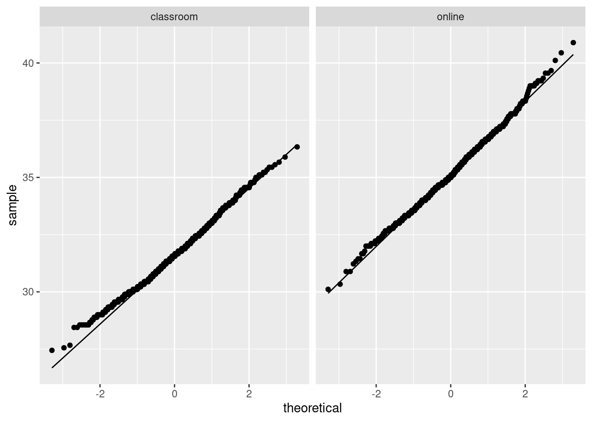
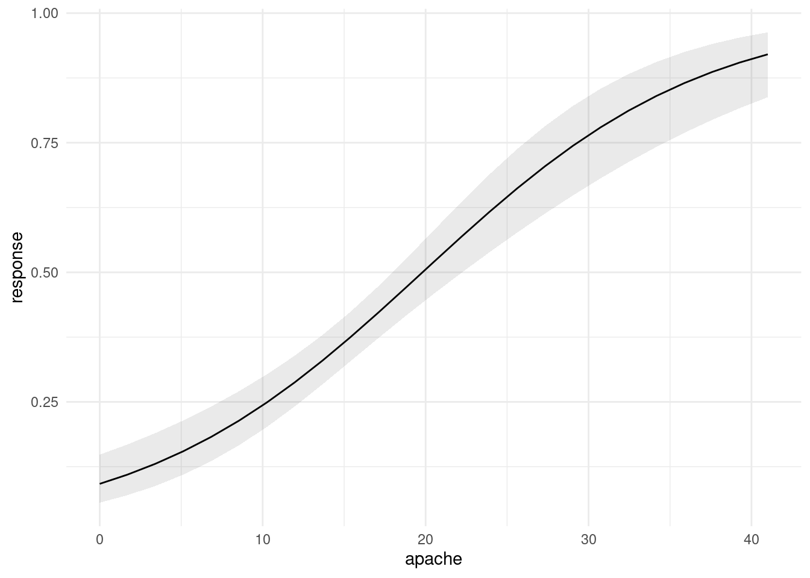

Chapter 4 Data exploration
## Warning: package 'MASS' was built under R version 4.0.5## Warning: package 'nnet' was built under R version 4.0.5## Warning: package 'Matrix' was built under R version 4.0.54.1 North Carolina births
The data in file link are about 500 randomly chosen births of babies in North Carolina. There is a lot of information: not just the weight at birth of the baby, but whether the baby was born prematurely, the ages of the parents, whether the parents are married, how long (in weeks) the pregnancy lasted (this is called the “gestation”) and so on.
Read in the data from the file into R, bearing in mind what type of file it is.
From your output, verify that you have the right number of observations and that you have several variables. Which of your variables correspond to birthweight, prematureness and length of pregnancy? (You might have to make guesses based on the names of the variables.)
The theory behind the \(t\)-test (which we do later) says that the distribution of birth weights should be (approximately) normally distributed. Obtain a histogram of the birth weights. Does it look approximately normal? Comment briefly. (You’ll have to pick a number of bins for your histogram first. I don’t mind very much what you pick, as long as it’s not obviously too many or too few bins.)
4.2 More about the NC births
This is an exploration of some extra issues around the North Carolina births data set.
How short does a pregnancy have to be, for the birth to be classified as “premature”? Deduce this from the data, by drawing a suitable graph or otherwise.
Explore the relationship between birth weight and length of pregancy (“gestation”) using a suitable graph. What do you see?
Do a web search to find the standard (North American) definition of a premature birth. Does that correspond to what you saw in the data? Cite the website you used, for example by saying “according to
URL, ldots”, withURLreplaced by the address of the website you found.
4.3 Nenana, Alaska
Nenana, Alaska, is about 50 miles west of Fairbanks. Every spring, there is a contest in Nenana. A wooden tripod is placed on the frozen river, and people try to guess the exact minute when the ice melts enough for the tripod to fall through the ice. The contest started in 1917 as an amusement for railway workers, and has taken place every year since. Now, hundreds of thousands of people enter their guesses on the Internet and the prize for the winner can be as much as $300,000.
Because so much money is at stake, and because the exact same tripod is placed at the exact same spot on the ice every year, the data are consistent and accurate. The data are in link.
Read the data into R. Note that the values are separated by tabs rather than spaces, so you’ll need an appropriate
read_to read it in.Find a way of displaying how many rows and columns your data frame has, and some of the values. Describe the first and last of the variables that you appear to have.
Dates and times are awkward to handle with software. (We see more ways later in the course.) The column
JulianDateexpresses the time that the tripod fell through the ice as a fractional number of days since December 31. This enables the time (as a fraction of the way through the day) to be recorded as well, the whole thing being an ordinary number. Make a histogram of the Julian dates. Comment briefly on its shape.Plot
JulianDateagainstYearon a scatterplot. What recent trends, if any, do you see? Comment briefly.
4.4 Computerized accounting
Beginning accounting students need to learn to learn to audit in a computerized environment. A sample of beginning accounting students took each of two tests: the Computer Attitude Scale (CAS) and the Computer Anxiety Rating Scale (CARS). A higher score in each indicates greater anxiety around computers. The test scores are scaled to be between 0 and 5. Also noted was each student’s gender. The data are in http://ritsokiguess.site/datafiles/compatt.txt. The data values are separated by spaces.
Read the data into R. Do you have what you expected? Explain briefly.
How many males and females were there in the sample?
Do the CAS scores tend to be higher for females or for males? Draw a suitable graph to help you decide, and come to a conclusion.
Find the median CAS scores for each gender. Does this support what you saw on your plot? Explain briefly.
Find the mean and standard deviation of both CAS and CARS scores (for all the students combined, ie. not separated by gender) without naming those columns explicitly.
4.5 Test scores in two classes
Open R Studio. Create a new Text File by selecting File, New File and Text File. You should see a new empty, untitled window appear at the top left. In that window, type or copy the data below (which are scores on a test for students in two different classes):
class score
ken 78
ken 62
ken 59
ken 69
ken 81
thomas 83
thomas 77
thomas 63
thomas 61
thomas 79
thomas 72
Save the file, using a filename of your choice (with, perhaps, extension
.txt). Or, if you prefer, use the one at
link.
Read the data into a data frame called
marks, usingread_delim, and list the data frame (by typing its name) to confirm that you read the data values properly. Note that the top line of the data file contains the names of the variables, as it ought to.* Obtain side-by-side boxplots of the scores for each class.
Do the two classes appear to have similar or different scores, on average? Explain briefly.
Obtain a boxplot of all the scores together, regardless of which class they came from.
Compute the median score (of all the scores together). Does this seem about right, looking at the boxplot? Explain briefly.
4.6 Unprecendented rainfall
In 1997, a company in Davis, California, had problems with odour in its wastewater facility. According to a company official, the problems were caused by “unprecedented weather conditions” and “because rainfall was at 170 to 180 percent of its normal level, the water in the holding ponds took longer to exit for irrigation, giving it more time to develop an odour.”
Annual rainfall data for the Davis area is here. Note that clicking on the link will display the file, and right-clicking on the link will give you some options, one of which is Copy Link Address, which you can then paste into your R Notebook.
The rainfall is measured in inches.
Read in and display (some of) the data.
Summarize the data frame.
Make a suitable plot of the rainfall values. (We are not, for the time being, concerned about the years.)
How would you describe the shape of the distribution of rainfall values?
In the quote at the beginning of the question, where do you think the assertion that the 1997 rainfall was “at 170 to 180 percent of its normal level” came from? Explain briefly.
Do you think the official’s calculation was reasonable? Explain briefly. (Note that this is not the same as asking whether the official’s calculation was . This is an important distinction for you to make.)
Do you think that the official was right to use the word “unprecedented” to describe the 1997 rainfall? Justify your answer briefly.
4.7 Learning algebra
At a high school in New Jersey, teachers were interested in what might help students to learn algebra. One idea was laptops as a learning aid, to see whether having access to one helped with algebra scores. (This was some time ago.) The 20 students in one class were given laptops to use in school and at home, while the 27 students in another class were not given laptops. For all of these students, the final exam score in algebra was recorded. The data are in http://ritsokiguess.site/datafiles/algebra.txt, with two columns, one indicating whether the student received a laptop or not, and the other giving their score on the algebra final exam.
Read in and display (some of) the data. Do you have (i) the correct number of observations, and (ii) the correct type of columns? Explain briefly.
Make a suitable graph of these data.
Comment briefly on your graph, thinking about what the teachers would like to know.
Work out the median and inter-quartile range for the students who did and who did not have laptops, and compare with the boxplot. (In R, the inter-quartile range is
IQRin uppercase.)
My solutions follow:
4.8 North Carolina births
The data in file link are about 500 randomly chosen births of babies in North Carolina. There is a lot of information: not just the weight at birth of the baby, but whether the baby was born prematurely, the ages of the parents, whether the parents are married, how long (in weeks) the pregnancy lasted (this is called the “gestation”) and so on.
- Read in the data from the file into R, bearing in mind what type of file it is.
Solution
This is a .csv file (it came from a spreadsheet), so it
needs reading in accordingly. Work directly from the URL (rather
than downloading the file, unless you are working offline):
##
## ── Column specification ──────────────────────────────────────────────────────────────────────────────────────────────────────────────────────────────────────────────────────────────────────
## cols(
## `Father Age` = col_double(),
## `Mother Age` = col_double(),
## `Weeks Gestation` = col_double(),
## `Pre-natal Visits` = col_double(),
## `Marital Status` = col_double(),
## `Mother Weight Gained` = col_double(),
## `Low Birthweight?` = col_double(),
## `Weight (pounds)` = col_double(),
## `Premie?` = col_double(),
## `Few Visits?` = col_double()
## )This shows you which variables the data set has (some of the names got a bit mangled), and it shows you that they are all integers except for the birth weight (a decimal number).
The easiest way to find out how many rows and columns there are is simply to list the data frame:
## # A tibble: 500 x 10
## `Father Age` `Mother Age` `Weeks Gestation` `Pre-natal Visi… `Marital Status`
## <dbl> <dbl> <dbl> <dbl> <dbl>
## 1 27 26 38 14 1
## 2 35 33 40 11 1
## 3 34 22 37 10 2
## 4 NA 16 38 9 2
## 5 35 33 39 12 1
## 6 32 24 36 12 1
## 7 33 33 38 15 2
## 8 38 35 38 16 1
## 9 28 29 40 5 1
## 10 NA 19 34 10 2
## # … with 490 more rows, and 5 more variables: Mother Weight Gained <dbl>,
## # Low Birthweight? <dbl>, Weight (pounds) <dbl>, Premie? <dbl>,
## # Few Visits? <dbl>or you can take a “glimpse” of it:
## Rows: 500
## Columns: 10
## $ `Father Age` <dbl> 27, 35, 34, NA, 35, 32, 33, 38, 28, NA, 28, 34,…
## $ `Mother Age` <dbl> 26, 33, 22, 16, 33, 24, 33, 35, 29, 19, 26, 31,…
## $ `Weeks Gestation` <dbl> 38, 40, 37, 38, 39, 36, 38, 38, 40, 34, 39, 39,…
## $ `Pre-natal Visits` <dbl> 14, 11, 10, 9, 12, 12, 15, 16, 5, 10, 15, 15, 0…
## $ `Marital Status` <dbl> 1, 1, 2, 2, 1, 1, 2, 1, 1, 2, 1, 1, 2, 2, 2, 2,…
## $ `Mother Weight Gained` <dbl> 32, 23, 50, NA, 15, 12, 60, 2, 20, NA, 45, 22, …
## $ `Low Birthweight?` <dbl> 0, 0, 0, 0, 0, 0, 0, 0, 0, 1, 0, 0, 0, 0, 0, 0,…
## $ `Weight (pounds)` <dbl> 6.8750, 6.8125, 7.2500, 8.8125, 8.8125, 5.8125,…
## $ `Premie?` <dbl> 0, 0, 0, 0, 0, 1, 0, 0, 0, 1, 0, 0, 1, 0, 0, 0,…
## $ `Few Visits?` <dbl> 0, 0, 0, 0, 0, 0, 0, 0, 1, 0, 0, 0, 1, 0, 0, 0,…Either of these displays show that there are 500 rows (observations, here births) and 10 columns (variables), and they both show what the variables are called. So they’re both good as an answer to the question.
What you’ll notice is that the variables have spaces in their
names, which will require special handling later. These outputs show
you what to do about those spaces in variable names: surround the
variable name with “backticks”. (On my keyboard, that’s on the key
to the left of number 1, where the squiggle is, that looks like a
backwards apostrophe. Probably next to Esc, depending on the
layout of your keyboard.)
Although almost all of the variables are stored as integers, the ones that have a question mark in their name are actually “logical”, true or false, with 1 denoting true and 0 false. We could convert them later if we want to. (A question mark is not a traditional character to put in a variable name, so we have to surround these variables with backticks too.)
\(\blacksquare\)
- From your output, verify that you have the right number of observations and that you have several variables. Which of your variables correspond to birthweight, prematureness and length of pregnancy? (You might have to make guesses based on the names of the variables.)
Solution
I do indeed have 500 observations on 10 variables (“several”). (If
you don’t have several variables, check to see that you didn’t use
read_delim or something by mistake.) After the
“500 observations of 10 variables” line(s) in each case, you see all the
variables by name, with what type of values they have,1
and the first few of the
values.2
The variable Weight (pounds) is the birthweight (in pounds),
Premie? is 1 for a premature baby and 0 for a full-term baby,
and Weeks Gestation is the number of weeks the pregnancy
lasted. Don’t forget to put backticks around each of those when
you use them
later.3
\(\blacksquare\)
- The theory behind the \(t\)-test (which we do later) says that the distribution of birth weights should be (approximately) normally distributed. Obtain a histogram of the birth weights. Does it look approximately normal? Comment briefly. (You’ll have to pick a number of bins for your histogram first. I don’t mind very much what you pick, as long as it’s not obviously too many or too few bins.)
Solution
You’ll have seen that I often start with 10 bins, or maybe not quite that many if I don’t have much data, and this is a decent general principle. That would give

which is perfectly acceptable. You can try something a bit more or a bit less, and see how you like it in comparison. What you are looking for is a nice clear picture of shape. If you have too few bins, you’ll lose the shape:

(is that leftmost bin an indication of skewness or some observations that happen to be smallish?)
And if you have too many, the shape will be there, but it will be hard to make out in all the noise, with frequencies going up and down:

I generally am fairly relaxed about the number of bins you use, as long as it’s not clearly too few or too many. You might have done exercises in the past that illustrate that the choice of number of bins (or the class intervals where you move from one bin to the next, which is another issue that I won’t explore here) can make an appreciable difference to how a histogram looks. Extra: I had some thoughts about this issue that I put in a blog post, that you might like to read: link. The nice thing about Sturges’ rule, mentioned there, is that you can almost get a number of bins for your histogram in your head (as long as you know the powers of 2, that is). What you do is to start with your sample size, here \(n=500\). You find the next power of 2 above that, which is here \(512=2^9\). You then take that power and add 1, to get 10 bins. If you don’t like that, you can get R to calculate it for you:
## [1] 10The place where Sturges’ rule comes from is an assumption of normal data (actually a binomial approximation to the normal, backwards though that sounds). If you have less than 30 observations, you’ll get fewer than 6 bins, which won’t do much of a job of showing the shape. Rob Hyndman wrote a about Sturges’ rule in which he asserts that it is just plain wrong (if you have taken B57, this note is very readable).
So what to use instead? Well, judgment is still better than something automatic, but if you want a place to start from, something with a better foundation than Sturges is the Freedman-Diaconis rule. This, in its original formulation, gives a bin width rather than a number of bins:
\[ w=2(IQR)n^{-1/3} \]
The nice thing about this is that it uses the interquartile range, so
it won’t be distorted by outliers. geom_histogram can take a
bin width, so we can use it as follows:
## [1] 0.4094743
R also has
## [1] 26which turns the Freedman-Diaconis rule into a number of bins rather
than a binwidth; using that gives the same histogram as we got with binwidth.
In my opinion, Freedman-Diaconis tends to give too many bins (here there are 26 rather than the 10 of Sturges). But I put it out there for you to make your own call.
Another way to go is a “density plot”. This is a smoothed-out version of a histogram that is not obviously frequencies in bins, but which does have a theoretical basis. It goes something like this:

geom_density has an optional parameter that controls how smooth
or wiggly the picture is, but the default is usually good.
Alright, before we got distracted, we were assessing normality. What about that?
It is mostly normal-looking, but I am suspicious about those very low birth weights, the ones below about 4 pounds. There are a few too many of those, as I see it.
If you think this is approximately normal, you need to make some comment along the lines of “the shape is approximately symmetric with no outliers”. I think my first answer is better, but this answer is worth something, since it is a not completely unreasonable interpretation of the histogram.
I have been making the distinction between a histogram (for one
quantitative variable) and side-by-side boxplots (for one quantitative
variable divided into groups by one categorical variable). When you
learned the boxplot, you probably learned it in the context of one
quantitative variable. You can draw a boxplot for that, too, but the
ggplot boxplot has an x as well as a
y. What you do to make a single boxplot is to set the
x equal 1, which produces a weird \(x\)-axis (that you ignore):
The high weight is actually an outlier, but look at all those outliers at the bottom!4
I think the reason for those extra very low values is that they are the premature births (that can result in very small babies). Which leads to the additional question coming up later.
\(\blacksquare\)
4.9 More about the NC births
This is an exploration of some extra issues around the North Carolina births data set.
- How short does a pregnancy have to be, for the birth to be classified as “premature”? Deduce this from the data, by drawing a suitable graph or otherwise.
Solution
##
## ── Column specification ──────────────────────────────────────────────────────────────────────────────────────────────────────────────────────────────────────────────────────────────────────
## cols(
## `Father Age` = col_double(),
## `Mother Age` = col_double(),
## `Weeks Gestation` = col_double(),
## `Pre-natal Visits` = col_double(),
## `Marital Status` = col_double(),
## `Mother Weight Gained` = col_double(),
## `Low Birthweight?` = col_double(),
## `Weight (pounds)` = col_double(),
## `Premie?` = col_double(),
## `Few Visits?` = col_double()
## )To figure it out from the data, we can
see how Weeks Gestation depends
on Premie?. Some possibilities are boxplots or a
scatterplot. Either of the first two graphs would get full credit (for
the graphing part: you still have to do the explanation) if this
were being marked:
## Warning: Removed 1 rows containing non-finite values (stat_boxplot).
The warning is because the prematurity of one of the babies is not known. Or
## Warning: Removed 1 rows containing missing values (geom_point).
The same warning again, for the same reason.
Notice how the graphs are similar in syntax, because the
what-to-plot is the same (apart from the factor thing) and we
just make a small change in
how-to-plot-it. In the boxplot, the thing on the \(x\)-scale needs to be
categorical, and Premie? is actually a number, so we’d better
make it into a factor, which is R’s version of a categorical
variable.
Premie. is actually a categorical variable (“premature” or
“not premature”)
masquerading as a quantitative one (1 or 0). It is an “indicator variable”, if
you’re familiar with that term.
It looks as if the breakpoint is 37 weeks: a pregnancy at least that
long is considered normal, but a shorter one ends with a premature
birth. Both plots show the same thing: the `Premie?=1` births
all go with short pregnancies, shorter than 37 weeks. This is
completely clear cut.
Another way to attack this is to use summarize, finding the
max and min:
## # A tibble: 1 x 3
## n min max
## <int> <dbl> <dbl>
## 1 500 NA NAonly this is for all the babies, premature or not.5 So we want it by prematurity,
which means a group_by first:
bw %>% group_by(`Premie?`) %>%
summarize( n=n(),
min=min(`Weeks Gestation`),
max=max(`Weeks Gestation`))## # A tibble: 3 x 4
## `Premie?` n min max
## <dbl> <int> <dbl> <dbl>
## 1 0 424 37 45
## 2 1 75 20 36
## 3 NA 1 NA NAgroup_by with a number works, even though using the number
in Premie? in a boxplot didn’t. group_by just uses
the distinct values, whether they are numbers, text or factor levels.
Any of these graphs or summaries will help you answer the question, in the same way. The ultimate issue here is “something that will get the job done”: it doesn’t matter so much what.
In R, NA means “missing”. When you try to compute something
containing a missing value, the answer is usually missing (since you
don’t know what the missing value is). That’s why the first
summarize gave us missing values: there was one missing weeks
of gestation in with all the ones for which we had values, so the max
and min had to be missing as well. In the second summarize,
the one by whether a baby was born prematurely or not, we learn a bit
more about that missing Premie?: evidently its weeks of
gestation was missing as well, since the min and max of that were
missing.6
Here’s that baby. I’m doing a bit of fiddling to show all the columns (as rows, since there’s only one actual row). Don’t worry about the second line of code below; we will investigate that later.
## # A tibble: 10 x 2
## name value
## <chr> <dbl>
## 1 Father Age 33
## 2 Mother Age 32
## 3 Weeks Gestation NA
## 4 Pre-natal Visits 9
## 5 Marital Status 1
## 6 Mother Weight Gained 25
## 7 Low Birthweight? 0
## 8 Weight (pounds) 7.19
## 9 Premie? NA
## 10 Few Visits? 0The only thing that was missing was its weeks of gestation, but that prevented anyone from figuring out whether it was premature or not.
\(\blacksquare\)
- Explore the relationship between birth weight and length of pregancy (“gestation”) using a suitable graph. What do you see?
Solution
This needs to be a scatterplot because these are both quantitative variables:
## Warning: Removed 1 rows containing missing values (geom_point).
You see a rather clear upward trend. Those very underweight babies came from very short pregnancies, but the vast majority of pregnancies were of more or less normal length (40 weeks is normal) and resulted in babies of more or less normal birth weight.
I want to illustrate something else: how about colouring the
births that were premature? Piece of cake with ggplot:
## Warning: Removed 1 rows containing missing values (geom_point).
That was rather silly because ggplot treated prematureness as a continuous variable, and plotted the values on a dark blue-light blue scale. This is the same issue as on the boxplot above, and has the same solution:
## Warning: Removed 1 rows containing missing values (geom_point).
Better.
With the normal-length pregnancies (red), there seems to be no relationship between length of pregnancy and birth weight, just a random variation. But with the premature births, a shorter pregnancy typically goes with a lower birth weight. This would be why the birth weights for the premature births were more variable.
\(\blacksquare\)
- Do a web search to find the standard (North American)
definition of a premature birth. Does that correspond to what you saw
in the data? Cite the website you used, for example by saying
“according to
URL, ldots”, withURLreplaced by the address of the website you found.
Solution
The website http://www.mayoclinic.org/diseases-conditions/premature-birth/basics/definition/con-20020050 says that “a premature birth is one that occurs before the start of the 37th week of pregnancy”, which is exactly what we found. (Note that I am citing the webpage on which I found this, and I even made it into a link so that you can check it.) The Mayo Clinic is a famous hospital system with locations in several US states, so I think we can trust what its website says.
\(\blacksquare\)
4.10 Nenana, Alaska
Nenana, Alaska, is about 50 miles west of Fairbanks. Every spring, there is a contest in Nenana. A wooden tripod is placed on the frozen river, and people try to guess the exact minute when the ice melts enough for the tripod to fall through the ice. The contest started in 1917 as an amusement for railway workers, and has taken place every year since. Now, hundreds of thousands of people enter their guesses on the Internet and the prize for the winner can be as much as $300,000.
Because so much money is at stake, and because the exact same tripod is placed at the exact same spot on the ice every year, the data are consistent and accurate. The data are in link.
- Read the data into R. Note that the values are
separated by tabs rather than spaces, so you’ll need an
appropriate
read_to read it in.
Solution
These are “tab-separated values”, so read_tsv is the
thing, as for the Australian athletes:
##
## ── Column specification ──────────────────────────────────────────────────────────────────────────────────────────────────────────────────────────────────────────────────────────────────────
## cols(
## Year = col_double(),
## JulianDate = col_double(),
## `Date&Time` = col_character()
## )Use whatever name you like for the data frame. One that is different
from any of the column headers is smart; then it is clear whether you
mean the whole data frame or one of its columns. ice or
melt or anything like that would also be good.
I haven’t asked you to display or check the data (that’s coming up), but if you look at it and find that it didn’t work, you’ll know to come back and try this part again. R usually gets it right or gives you an error.
If you look at the data, they do appear to be separated by spaces, but the text version of the date and time also have spaces in them, so things might go astray if you try and read the values in without recognizing that the actual separator is a tab:
##
## ── Column specification ──────────────────────────────────────────────────────────────────────────────────────────────────────────────────────────────────────────────────────────────────────
## cols(
## `Year JulianDate Date&Time` = col_character()
## )## Warning: 87 parsing failures.
## row col expected actual file
## 1 -- 1 columns 5 columns 'http://ritsokiguess.site/datafiles/nenana.txt'
## 2 -- 1 columns 5 columns 'http://ritsokiguess.site/datafiles/nenana.txt'
## 3 -- 1 columns 5 columns 'http://ritsokiguess.site/datafiles/nenana.txt'
## 4 -- 1 columns 5 columns 'http://ritsokiguess.site/datafiles/nenana.txt'
## 5 -- 1 columns 5 columns 'http://ritsokiguess.site/datafiles/nenana.txt'
## ... ... ......... ......... ...............................................
## See problems(...) for more details.Ouch! A hint as to what went wrong comes from looking at the read-in data frame:
## # A tibble: 87 x 1
## `Year\tJulianDate\tDate&Time`
## <chr>
## 1 "1917\t120.4795\tApril"
## 2 "1918\t131.3983\tMay"
## 3 "1919\t123.6066\tMay"
## 4 "1920\t132.4490\tMay"
## 5 "1921\t131.2795\tMay"
## 6 "1922\t132.5559\tMay"
## 7 "1923\t129.0837\tMay"
## 8 "1924\t132.6323\tMay"
## 9 "1925\t127.7726\tMay"
## 10 "1926\t116.6691\tApril"
## # … with 77 more rowsThose t symbols mean “tab character”, which is our hint that
the values were separated by tabs rather than spaces.
More detail (if you can bear to see it) is here:
## # A tibble: 87 x 5
## row col expected actual file
## <int> <chr> <chr> <chr> <chr>
## 1 1 <NA> 1 columns 5 columns 'http://ritsokiguess.site/datafiles/nenana.t…
## 2 2 <NA> 1 columns 5 columns 'http://ritsokiguess.site/datafiles/nenana.t…
## 3 3 <NA> 1 columns 5 columns 'http://ritsokiguess.site/datafiles/nenana.t…
## 4 4 <NA> 1 columns 5 columns 'http://ritsokiguess.site/datafiles/nenana.t…
## 5 5 <NA> 1 columns 5 columns 'http://ritsokiguess.site/datafiles/nenana.t…
## 6 6 <NA> 1 columns 5 columns 'http://ritsokiguess.site/datafiles/nenana.t…
## 7 7 <NA> 1 columns 5 columns 'http://ritsokiguess.site/datafiles/nenana.t…
## 8 8 <NA> 1 columns 5 columns 'http://ritsokiguess.site/datafiles/nenana.t…
## 9 9 <NA> 1 columns 5 columns 'http://ritsokiguess.site/datafiles/nenana.t…
## 10 10 <NA> 1 columns 5 columns 'http://ritsokiguess.site/datafiles/nenana.t…
## # … with 77 more rowsThe first line of the data file (with the variable names in it) had no
spaces, only tabs, so read_delim thinks there is one
column with a very long name, but in the actual data, there are
five space-separated columns. The text date-times are of the
form “April 30 at 11:30 AM”, which, if you think it’s all separated
by spaces, is actually 5 things: April, 30, at and so on. These are
the only things that are separated by spaces, so, from that point of
view, there are five columns.
\(\blacksquare\)
- Find a way of displaying how many rows and columns your data frame has, and some of the values. Describe the first and last of the variables that you appear to have.
Solution
The easiest is just to display the tibble:
## # A tibble: 87 x 3
## Year JulianDate `Date&Time`
## <dbl> <dbl> <chr>
## 1 1917 120. April 30 at 11:30 AM
## 2 1918 131. May 11 at 9:33 AM
## 3 1919 124. May 3 at 2:33 PM
## 4 1920 132. May 11 at 10:46 AM
## 5 1921 131. May 11 at 6:42 AM
## 6 1922 133. May 12 at 1:20 PM
## 7 1923 129. May 9 at 2:00 AM
## 8 1924 133. May 11 at 3:10 PM
## 9 1925 128. May 7 at 6:32 PM
## 10 1926 117. April 26 at 4:03 PM
## # … with 77 more rowsAlternatively, you can take a glimpse of it:
## Rows: 87
## Columns: 3
## $ Year <dbl> 1917, 1918, 1919, 1920, 1921, 1922, 1923, 1924, 1925, 1926…
## $ JulianDate <dbl> 120.4795, 131.3983, 123.6066, 132.4490, 131.2795, 132.5559…
## $ `Date&Time` <chr> "April 30 at 11:30 AM", "May 11 at 9:33 AM", "May 3 at 2:3…There are 87 years, and 3 columns (variables). The first column is year, and the last column is the date and time that the tripod fell into the river, written as a piece of text. I explain the second column in a moment.
\(\blacksquare\)
- Dates and times are awkward to handle with software. (We
see more ways later in the course.) The column
JulianDateexpresses the time that the tripod fell through the ice as a fractional number of days since December 31. This enables the time (as a fraction of the way through the day) to be recorded as well, the whole thing being an ordinary number. Make a histogram of the Julian dates. Comment briefly on its shape.
Solution
With a ggplot histogram, we need a number of bins
first. I can do Sturges’ rule in my head: the next power of 2 up
from 87 (our \(n\)) is 128, which is \(2^7\), so the base 2 log of
87 rounds up to 7. That plus one is 8, so we need 8 bins. For
you, any not-insane number of bins will do, or any not-insane
bin width, if you want to go that way:

Note that you need to type JulianDate exactly as it
appears, capital letters and all. R is case-sensitive.
This histogram looks more or less symmetric (and, indeed, normal). I really don’t think you can justify an answer other than “symmetric” here. (Or “approximately normal”: that’s good too.) If your histogram is different, say so. I think that “hole” in the middle is not especially important.
We haven’t done normal quantile plots yet, but looking ahead:

That hugs the line pretty well, so I would call it close to normally-distributed. It bulges away from the line because there are more values just below 120 than you would expect for a normal. This corresponds to the histogram bar centred just below 120 being taller than you would have expected.7
Extra: looking way ahead (to almost the end of the R stuff), this is how you handle the dates and times:
library(lubridate)
nenana %>%
mutate(longdt = str_c(Year, " ", `Date&Time`)) %>%
mutate(datetime = ymd_hm(longdt, tz = "America/Anchorage"))## # A tibble: 87 x 5
## Year JulianDate `Date&Time` longdt datetime
## <dbl> <dbl> <chr> <chr> <dttm>
## 1 1917 120. April 30 at 11:30 … 1917 April 30 at 11… 1917-04-30 11:30:00
## 2 1918 131. May 11 at 9:33 AM 1918 May 11 at 9:33… 1918-05-11 09:33:00
## 3 1919 124. May 3 at 2:33 PM 1919 May 3 at 2:33 … 1919-05-03 14:33:00
## 4 1920 132. May 11 at 10:46 AM 1920 May 11 at 10:4… 1920-05-11 10:46:00
## 5 1921 131. May 11 at 6:42 AM 1921 May 11 at 6:42… 1921-05-11 06:42:00
## 6 1922 133. May 12 at 1:20 PM 1922 May 12 at 1:20… 1922-05-12 13:20:00
## 7 1923 129. May 9 at 2:00 AM 1923 May 9 at 2:00 … 1923-05-09 02:00:00
## 8 1924 133. May 11 at 3:10 PM 1924 May 11 at 3:10… 1924-05-11 15:10:00
## 9 1925 128. May 7 at 6:32 PM 1925 May 7 at 6:32 … 1925-05-07 18:32:00
## 10 1926 117. April 26 at 4:03 PM 1926 April 26 at 4:… 1926-04-26 16:03:00
## # … with 77 more rowsI am not doing any further analysis with these, so just displaying them is good.
I have to do a preliminary step to get the date-times with their year in one place. str_c glues pieces of text together: in this case, the year, a space, and then the rest of the
Date&Time. I stored this in longdt. The second mutate is the business end of it: ymd_hm takes a piece of text containing a year, month (by name or number), day, hours, minutes in that order, and extracts those things from it, storing the whole thing as an R date-time. Note that the AM/PM was handled properly.
The benefit of doing that is we can extract anything from the dates, such as the month or day of week, or take differences between the dates. Or even check that the Julian dates were calculated correctly (the lubridate function is called yday for “day of year”):
nenana %>%
mutate(longdt = str_c(Year, " ", `Date&Time`)) %>%
mutate(datetime = ymd_hm(longdt, tz = "America/Anchorage")) %>%
mutate(jd = yday(datetime)) ->
nenana2
nenana2 %>% select(JulianDate, jd, datetime)## # A tibble: 87 x 3
## JulianDate jd datetime
## <dbl> <dbl> <dttm>
## 1 120. 120 1917-04-30 11:30:00
## 2 131. 131 1918-05-11 09:33:00
## 3 124. 123 1919-05-03 14:33:00
## 4 132. 132 1920-05-11 10:46:00
## 5 131. 131 1921-05-11 06:42:00
## 6 133. 132 1922-05-12 13:20:00
## 7 129. 129 1923-05-09 02:00:00
## 8 133. 132 1924-05-11 15:10:00
## 9 128. 127 1925-05-07 18:32:00
## 10 117. 116 1926-04-26 16:03:00
## # … with 77 more rowsThe Julian days as calculated are the same. Note that these are not rounded; the Julian day begins at midnight and lasts until the next midnight. Thus Julian day 132 is May 12 (in a non-leap year like 1922) and the reason that the Julian date given in the file for that year would round to 133 is that it is after noon (1:20pm as you see).
\(\blacksquare\)
- Plot
JulianDateagainstYearon a scatterplot. What recent trends, if any, do you see? Comment briefly.
Solution
geom_point:

This is actually a small-but-real downward trend, especially since about 1960, but the large amount of variability makes it hard to see, so I’m good with either “no trend” or “weak downward trend” or anything roughly like that. There is definitely not much trend before 1960, but most of the really early break-ups (less than about 118) have been since about 1990.
You can even add to the ggplot, by putting a smooth trend on it:
## `geom_smooth()` using method = 'loess' and formula 'y ~ x'
This is R’s version of a trend that is not constrained to be linear (so that it “lets the data speak for itself”).
Now there is something obvious to see: after about 1960, there is a clear downward trend: the ice is breaking up earlier on average every year. Even though there is a lot of variability, the overall trend, viewed this way, is clear.
What does this mean, in practice? This notion of the ice melting earlier than it used to is consistent all over the Arctic, and is one more indication of climate change. Precisely, it is an indication that climate change is happening, but we would have to delve further to make any statements about the cause of that climate change.
\(\blacksquare\)
4.11 Computerized accounting
Beginning accounting students need to learn to learn to audit in a computerized environment. A sample of beginning accounting students took each of two tests: the Computer Attitude Scale (CAS) and the Computer Anxiety Rating Scale (CARS). A higher score in each indicates greater anxiety around computers. The test scores are scaled to be between 0 and 5. Also noted was each student’s gender. The data are in http://ritsokiguess.site/datafiles/compatt.txt. The data values are separated by spaces.
- Read the data into R. Do you have what you expected? Explain briefly.
Solution
Read in and display the data. This, I think, is the easiest way.
my_url <- "https://raw.githubusercontent.com/nxskok/datafiles/master/compatt.txt"
anxiety=read_delim(my_url," ")##
## ── Column specification ──────────────────────────────────────────────────────────────────────────────────────────────────────────────────────────────────────────────────────────────────────
## cols(
## gender = col_character(),
## CAS = col_double(),
## CARS = col_double()
## )## # A tibble: 35 x 3
## gender CAS CARS
## <chr> <dbl> <dbl>
## 1 female 2.85 2.9
## 2 male 2.6 2.32
## 3 female 2.2 1
## 4 male 2.65 2.58
## 5 male 2.6 2.58
## 6 male 3.2 3.05
## 7 male 3.65 3.74
## 8 female 2.55 1.9
## 9 male 3.15 3.32
## 10 male 2.8 2.74
## # … with 25 more rowsThere is a total of 35 students with a CAS score, a CARS score and a gender recorded for each. This is in line with what I was expecting. (You can also note that the genders appear to be a mixture of males and females.)
\(\blacksquare\)
- How many males and females were there in the sample?
Solution
Most easily count:
## # A tibble: 2 x 2
## gender n
## <chr> <int>
## 1 female 15
## 2 male 20This also works (and is therefore good):
## # A tibble: 2 x 2
## gender count
## <chr> <int>
## 1 female 15
## 2 male 20I want you to use R to do the counting (that is, don’t just go through the whole data set and count the males and females yourself). This is because you might have thousands of data values and you need to learn how to get R to count them for you.
15 females and 20 males, which you should say. I made a point of not saying that it is enough to get the output with the answers on it, so you need to tell me what the answer is.
\(\blacksquare\)
- Do the CAS scores tend to be higher for females or for males? Draw a suitable graph to help you decide, and come to a conclusion.
Solution
Gender is categorical and CAS score is quantitative, so a boxplot would appear to be the thing:

The median for males is slightly higher, so male accountants are more anxious around computers than female accountants are.
If you wish, side-by-side (or, better, above-and-below) histograms would also work:

If you go this way, you have to make a call about where the centres of the histograms are. I guess the male one is slightly further to the right, but it’s not so easy to tell. (Make a call.)
\(\blacksquare\)
- Find the median CAS scores for each gender. Does this support what you saw on your plot? Explain briefly.
Solution
Group-by and summarize:
## # A tibble: 2 x 2
## gender med
## <chr> <dbl>
## 1 female 2.55
## 2 male 2.85The median is a bit higher for males, which is what I got on my boxplot (and is apparently the same thing as is on the histograms, but it’s harder to be sure there).
\(\blacksquare\)
- Find the mean and standard deviation of both CAS and CARS scores (for all the students combined, ie. not separated by gender) without naming those columns explicitly.
Solution
Without naming them explicitly means using some other way to pick them out of the data frame, summarize with across.
The basic across comes from asking yourself what the names of those columns have in common: they start with C and the gender column doesn’t:
## # A tibble: 1 x 4
## CAS_m CAS_s CARS_m CARS_s
## <dbl> <dbl> <dbl> <dbl>
## 1 2.82 0.484 2.77 0.671Another way is to ask what property these two columns have in common: they are the only two numeric (quantitative) columns. This means using an across with a where inside it, thus:
## # A tibble: 1 x 4
## CAS_m CAS_s CARS_m CARS_s
## <dbl> <dbl> <dbl> <dbl>
## 1 2.82 0.484 2.77 0.671Read the first one as “across all the columnns whose names start with S, find the mean and SD of them.” The second one is a little clunkier: “acrosss all the columns for which is.numeric is true, find the mean and SD of them”. A shorter way for the second one is “across all the numeric (quantitative) columns, find their mean and SD”, but then you have to remember exactly how to code that. The reason for the list is that we are calculating two statistics for each column that we find. I am using a “named list” so that the mean gets labelled with an m on the end of the column name, and the SD gets an s on the end.
Either of these is good, or anything equivalent (like noting that the two anxiety scales both ends\_with S):
## # A tibble: 1 x 4
## CAS_m CAS_s CARS_m CARS_s
## <dbl> <dbl> <dbl> <dbl>
## 1 2.82 0.484 2.77 0.671Because I didn’t say otherwise, you should tell me what the means and SDs are, rounding off suitably: the CAS scores have mean 2.82 and SD 0.48, and the CARS scores have mean 2.77 and SD 0.67.
Yet another way to do it is to select the columns you want first (which you can do by number so as not to name them), and then find the mean and SD of all of them:
## # A tibble: 1 x 4
## CAS_m CAS_s CARS_m CARS_s
## <dbl> <dbl> <dbl> <dbl>
## 1 2.82 0.484 2.77 0.671This doesn’t work:
## gender CAS CARS
## Length:35 Min. :1.800 Min. :1.000
## Class :character 1st Qu.:2.575 1st Qu.:2.445
## Mode :character Median :2.800 Median :2.790
## Mean :2.816 Mean :2.771
## 3rd Qu.:3.150 3rd Qu.:3.290
## Max. :3.750 Max. :4.000because, although it gets the means, it does not get the standard deviations. (I added the SD to the original question to make you find a way other than this.)
In summary, find a way to get those answers without naming those columns in your code, and I’m good.
In case you were wondering about how to do this separately by gender, well, put the group\_by in like you did before:
anxiety %>% group_by(gender) %>%
summarize(across(where(is.numeric), list(m = ~mean(.), s = ~sd(.))))## # A tibble: 2 x 5
## gender CAS_m CAS_s CARS_m CARS_s
## <chr> <dbl> <dbl> <dbl> <dbl>
## 1 female 2.64 0.554 2.51 0.773
## 2 male 2.94 0.390 2.96 0.525or
anxiety %>% group_by(gender) %>%
summarize(across(starts_with("C"), list(m = ~mean(.), s = ~sd(.))))## # A tibble: 2 x 5
## gender CAS_m CAS_s CARS_m CARS_s
## <chr> <dbl> <dbl> <dbl> <dbl>
## 1 female 2.64 0.554 2.51 0.773
## 2 male 2.94 0.390 2.96 0.525The male means are slightly higher on both tests, but the male standard deviations are a little smaller. You might be wondering whether the test scores are related. They are both quantitative, so the obvious way to find out is a scatterplot:

The two variables can be on either axis, since there is no obvious response or explanatory variable. A higher score on one scale goes with a higher score on the other, suggesting that the two scales are measuring the same thing.
This plot mixes up the males and females, so you might like to distinguish them, which goes like this:

There is a slight (but only slight) tendency for the males to be up and to the right, and for the females to be down and to the left. This is about what you would expect, given that the male means are slightly bigger on both scores, but the difference in means is not that big compared to the SD.
\(\blacksquare\)
4.12 Test scores in two classes
Open R Studio. Create a new Text File by selecting File, New File and Text File. You should see a new empty, untitled window appear at the top left. In that window, type or copy the data below (which are scores on a test for students in two different classes):
class score
ken 78
ken 62
ken 59
ken 69
ken 81
thomas 83
thomas 77
thomas 63
thomas 61
thomas 79
thomas 72
Save the file, using a filename of your choice (with, perhaps, extension
.txt). Or, if you prefer, use the one at
link.
- Read the data into a data frame called
marks, usingread_delim, and list the data frame (by typing its name) to confirm that you read the data values properly. Note that the top line of the data file contains the names of the variables, as it ought to.
Solution
I was lazy and used the one on the web, the values being separated (“delimited”) by exactly one space:
##
## ── Column specification ──────────────────────────────────────────────────────────────────────────────────────────────────────────────────────────────────────────────────────────────────────
## cols(
## class = col_character(),
## score = col_double()
## )## # A tibble: 11 x 2
## class score
## <chr> <dbl>
## 1 ken 78
## 2 ken 62
## 3 ken 59
## 4 ken 69
## 5 ken 81
## 6 thomas 83
## 7 thomas 77
## 8 thomas 63
## 9 thomas 61
## 10 thomas 79
## 11 thomas 72If you copied and pasted, or typed in, the data values yourself, use the local file name (such as marks.txt) in place of the URL.
Extra: in the old days, when we used read.table (which actually also
works here), we needed to also say header=T to note that the
top line of the data file was variable names. With
read_delim, that’s the default, and if the top line is
not variable names, that’s when you have to say so. If I cheat,
by skipping the first line and saying that I then have no column names, I get:
##
## ── Column specification ──────────────────────────────────────────────────────────────────────────────────────────────────────────────────────────────────────────────────────────────────────
## cols(
## X1 = col_character(),
## X2 = col_double()
## )## # A tibble: 11 x 2
## X1 X2
## <chr> <dbl>
## 1 ken 78
## 2 ken 62
## 3 ken 59
## 4 ken 69
## 5 ken 81
## 6 thomas 83
## 7 thomas 77
## 8 thomas 63
## 9 thomas 61
## 10 thomas 79
## 11 thomas 72Column names are supplied (X1 and X2). I could also
supply my own column names, in which case the file needs not to have
any, so I need the skip again:
##
## ── Column specification ──────────────────────────────────────────────────────────────────────────────────────────────────────────────────────────────────────────────────────────────────────
## cols(
## instructor = col_character(),
## mark = col_double()
## )## # A tibble: 11 x 2
## instructor mark
## <chr> <dbl>
## 1 ken 78
## 2 ken 62
## 3 ken 59
## 4 ken 69
## 5 ken 81
## 6 thomas 83
## 7 thomas 77
## 8 thomas 63
## 9 thomas 61
## 10 thomas 79
## 11 thomas 72\(\blacksquare\)
- * Obtain side-by-side boxplots of the scores for each class.
Solution
Remember: on a regular boxplot,8 the groups go across (\(x\)), the variable measured goes up (\(y\)).
Extra: this might work:

It does. That was a guess. So if you want sideways boxplots, this is
how you can get them. Long group names sometimes fit better on the \(y\)-axis, in which case flipping the axes will help.
(The x and y happen
before the coordinate-flip, so they are the same as above, not
the same way they come out.)
\(\blacksquare\)
- Do the two classes appear to have similar or different scores, on average? Explain briefly.
Solution
The median for Thomas’s class appears to be quite a bit higher than for Ken’s class (the difference is actually about 6 marks). It’s up to you whether you think this is a big difference or not: I want you to have an opinion, but I don’t mind so much what that opinion is. Having said that the medians are quite a bit different, note that the boxes overlap substantially, so that the distributions of scores are pretty similar (or, the quartiles of scores are similar, or, the IQR of scores is similar for the two groups). If you say that, it’s good, but I’m not insisting that you do.
\(\blacksquare\)
- Obtain a boxplot of all the scores together, regardless of which class they came from.
Solution
Replace your \(x\)-coordinate by some kind of dummy thing like
1 (factor(1) also works):

The \(x\)-axis is kind of dopey, so you just ignore it. It is possible to remove it, but that is more work than it’s worth, and I didn’t get rid of the ticks below:
ggplot(marks, aes(x = 1, y = score)) + geom_boxplot() +
theme(
axis.text.x = element_blank(),
axis.title.x = element_blank()
)
\(\blacksquare\)
- Compute the median score (of all the scores together). Does this seem about right, looking at the boxplot? Explain briefly.
Solution
Three ways to get the median score. I like the first one best:
## # A tibble: 1 x 1
## med
## <dbl>
## 1 72## [1] 72## [1] 72summarize is the tidyverse “verb” that does what
you want here. (The same idea gets the mean score for each class, below.)
The other ways use the basic function median. To make that
work, you need to say that the variable score whose median
you want lives in the data frame marks. These are two ways to
do that.
Extra: if you wanted median by group, this is the approved
(tidyverse) way:
## # A tibble: 2 x 2
## class med
## <chr> <dbl>
## 1 ken 69
## 2 thomas 74.5To get something by group, the extra step is group_by, and
then whatever you do after that is done for each group.
You can now go back and compare these medians with the ones on the boxplots in (here). They should be the same. Or you can even do this:
marks %>%
group_by(class) %>%
summarize(
q1 = quantile(score, 0.25),
med = median(score),
q3 = quantile(score, 0.75)
)## # A tibble: 2 x 4
## class q1 med q3
## <chr> <dbl> <dbl> <dbl>
## 1 ken 62 69 78
## 2 thomas 65.2 74.5 78.5You can calculate as many summaries as you like. These ones should
match up with the top and bottom of the boxes on the boxplots. The
only restriction is that the things on the right side of the equals
should return a single number. If you have a function like
quantile without anything extra that returns more than one number:
## 0% 25% 50% 75% 100%
## 59.0 62.5 72.0 78.5 83.0you’re in trouble. Only read on if you really want to know how to handle this. Here’s step 1:
## # A tibble: 2 x 2
## # Rowwise: class
## class data
## <chr> <list<tibble>>
## 1 ken [5 × 1]
## 2 thomas [6 × 1]This is kind of a funky group_by. The things in the
data column are the whole rest of the data frame:
there were 5 students in Ken’s class and 6 in Thomas’s, and they each
had a score, so 5 or 6 rows and 1 column. The column
data is known in the trade as a “list-column”.
Now, for each of those mini-data-frames, we want to calculate the
quantiles of score. This is rowwise:
for each of our
mini-data-frames data, calculate the five-number summary of the column called score in it:
## # A tibble: 2 x 3
## # Rowwise:
## class data qq
## <chr> <list<tibble>> <list>
## 1 ken [5 × 1] <dbl [5]>
## 2 thomas [6 × 1] <dbl [5]>I have to be a little bit careful about which data frame I want the
score to come from: the ones hidden in data, which
are the things we’re for-eaching over.
This obtains a new list-column called qq, with the
five-number summary for each group.9
Now we want to display the quantiles. This is the easiest way:
## # A tibble: 10 x 3
## class data qq
## <chr> <list<tibble>> <dbl>
## 1 ken [5 × 1] 59
## 2 ken [5 × 1] 62
## 3 ken [5 × 1] 69
## 4 ken [5 × 1] 78
## 5 ken [5 × 1] 81
## 6 thomas [6 × 1] 61
## 7 thomas [6 × 1] 65.2
## 8 thomas [6 × 1] 74.5
## 9 thomas [6 × 1] 78.5
## 10 thomas [6 × 1] 83The unnest turns the list-column back into actual data, so we
get the five quantiles for each class.
The only thing this doesn’t do is to show us which quantile is which
(we know, of course, that the first one is the minimum, the last one
is the max and the quartiles and median are in between). It would be
nice to see which is which, though. A trick to do that is to use
enframe, thus:
## # A tibble: 5 x 2
## name value
## <chr> <dbl>
## 1 0% 59
## 2 25% 62.5
## 3 50% 72
## 4 75% 78.5
## 5 100% 83or thus:
## # A tibble: 5 x 2
## name value
## <chr> <dbl>
## 1 0% 59
## 2 25% 62.5
## 3 50% 72
## 4 75% 78.5
## 5 100% 83I don’t normally like the second way with all the brackets, but we’ll be using it later.
The idea here is that the output from a quantile is a vector, but one
with “names”, namely the percentiles themselves. enframe
makes a two-column data frame with the names and the values. (You can
change the names of the columns it creates, but here we’ll keep track
of which is which.)
So we have a two-column data frame with a column saying which quantile is which. So let’s rewrite our code to use this:
## # A tibble: 2 x 3
## # Rowwise:
## class data qq
## <chr> <list<tibble>> <list>
## 1 ken [5 × 1] <tibble [5 × 2]>
## 2 thomas [6 × 1] <tibble [5 × 2]>Note that the qq data frames in the list-column now
themselves have two columns.
And finally unnest qq:
marks %>%
nest_by(class) %>%
rowwise() %>%
mutate(qq = list(enframe(quantile(data$score)))) %>%
unnest(qq)## # A tibble: 10 x 4
## class data name value
## <chr> <list<tibble>> <chr> <dbl>
## 1 ken [5 × 1] 0% 59
## 2 ken [5 × 1] 25% 62
## 3 ken [5 × 1] 50% 69
## 4 ken [5 × 1] 75% 78
## 5 ken [5 × 1] 100% 81
## 6 thomas [6 × 1] 0% 61
## 7 thomas [6 × 1] 25% 65.2
## 8 thomas [6 × 1] 50% 74.5
## 9 thomas [6 × 1] 75% 78.5
## 10 thomas [6 × 1] 100% 83Success! Or even:
marks %>%
nest_by(class) %>%
rowwise() %>%
mutate(qq = list(enframe(quantile(data$score)))) %>%
unnest(qq) %>%
mutate(qn = parse_number(name)) %>%
select(-name) %>%
pivot_wider(names_from = qn, values_from = value)## # A tibble: 2 x 7
## class data `0` `25` `50` `75` `100`
## <chr> <list<tibble>> <dbl> <dbl> <dbl> <dbl> <dbl>
## 1 ken [5 × 1] 59 62 69 78 81
## 2 thomas [6 × 1] 61 65.2 74.5 78.5 83This deliberately untidies the final answer to make it nicer to look
at. (The lines before that create a numeric quantile, so that it sorts
into the right order, and then get rid of the original quantile
percents. Investigate what happens if you do a similar pivot_wider
without doing that.)
4.13 Unprecendented rainfall
In 1997, a company in Davis, California, had problems with odour in its wastewater facility. According to a company official, the problems were caused by “unprecedented weather conditions” and “because rainfall was at 170 to 180 percent of its normal level, the water in the holding ponds took longer to exit for irrigation, giving it more time to develop an odour.”
Annual rainfall data for the Davis area is here. Note that clicking on the link will display the file, and right-clicking on the link will give you some options, one of which is Copy Link Address, which you can then paste into your R Notebook.
The rainfall is measured in inches.
- Read in and display (some of) the data.
Solution
Look at the data file, and see that the values are separated by a single space, so will do it. Read straight from the URL; the hint above tells you how to copy it, which would even work if the link spans two lines.
##
## ── Column specification ──────────────────────────────────────────────────────────────────────────────────────────────────────────────────────────────────────────────────────────────────────
## cols(
## Year = col_double(),
## Rainfall = col_double()
## )## # A tibble: 47 x 2
## Year Rainfall
## <dbl> <dbl>
## 1 1951 20.7
## 2 1952 16.7
## 3 1953 13.5
## 4 1954 14.1
## 5 1955 25.4
## 6 1956 12.0
## 7 1957 28.7
## 8 1958 11.0
## 9 1959 12.6
## 10 1960 12.8
## # … with 37 more rowsNote for later that the and the have Capital Letters. You can call the data frame whatever you like, but I think something descriptive is better than eg. .
Extra: this works because there is exactly one space between the year and the rainfall amount. But the year is always four digits, so the columns line up, and there is a space all the way down between the year and the rainfall. That means that this will also work:
##
## ── Column specification ──────────────────────────────────────────────────────────────────────────────────────────────────────────────────────────────────────────────────────────────────────
## cols(
## Year = col_double(),
## Rainfall = col_double()
## )## # A tibble: 47 x 2
## Year Rainfall
## <dbl> <dbl>
## 1 1951 20.7
## 2 1952 16.7
## 3 1953 13.5
## 4 1954 14.1
## 5 1955 25.4
## 6 1956 12.0
## 7 1957 28.7
## 8 1958 11.0
## 9 1959 12.6
## 10 1960 12.8
## # … with 37 more rowsThis is therefore also good.
It also looks as if it could be tab-separated values, since the rainfall column always starts in the same place, but if you try it, you’ll find that it doesn’t work:
##
## ── Column specification ──────────────────────────────────────────────────────────────────────────────────────────────────────────────────────────────────────────────────────────────────────
## cols(
## `Year Rainfall` = col_character()
## )## # A tibble: 47 x 1
## `Year Rainfall`
## <chr>
## 1 1951 20.66
## 2 1952 16.72
## 3 1953 13.51
## 4 1954 14.1
## 5 1955 25.37
## 6 1956 12.05
## 7 1957 28.74
## 8 1958 10.98
## 9 1959 12.55
## 10 1960 12.75
## # … with 37 more rowsThis looks as if it worked, but it didn’t, because there is only column, of years and rainfalls smooshed together as text, and if you try to do anything else with them later it won’t work.
Hence those values that might have been tabs actually were not. There’s no way to be sure about this; you have to try something and see what works. An indication, though: if you have more than one space, and the things in the later columns are -justified, that could be tab-separated; if the things in the later columns are -justified, so that they finish in the same place but don’t start in the same place, that is probably aligned columns.
\(\blacksquare\)
- Summarize the data frame.
Solution
I almost gave the game away: this is summary.
## Year Rainfall
## Min. :1951 Min. : 6.14
## 1st Qu.:1962 1st Qu.:12.30
## Median :1974 Median :16.72
## Mean :1974 Mean :18.69
## 3rd Qu.:1986 3rd Qu.:25.21
## Max. :1997 Max. :37.42The summary of the years may not be very helpful, but the summary of the annual rainfall values might be. It’s not clear yet why I asked you to do this, but it will become clearer later.
\(\blacksquare\)
- Make a suitable plot of the rainfall values. (We are not, for the time being, concerned about the years.)
Solution
This is one quantitative variable, so a histogram is your first thought. This means picking a number of bins. Not too many, since you want a picture of the shape:

If you picked fewer bins, you’ll get a different picture:

The choice of the number of bins depends on what you think the story about shape is that you want to tell (see next part). You will probably need to try some different numbers of bins to see which one you like best. You can say something about what you tried, for example “I also tried 8 bins, but I like the histogram with 6 bins better.”
\(\blacksquare\)
- How would you describe the shape of the distribution of rainfall values?
Solution
This will depend on the histogram you drew in the previous part. If it looks like the first one, the best answer is “bimodal”: that is, it has two peaks with a gap between them. If it looks like the second one, you have an easier time; this is ordinary right-skewness.
\(\blacksquare\)
- In the quote at the beginning of the question, where do you think the assertion that the 1997 rainfall was “at 170 to 180 percent of its normal level” came from? Explain briefly.
Solution
First we need the 1997 rainfall. Go back and find it in the data. I am borrowing an idea from later in the course (because I am lazy):
## # A tibble: 1 x 2
## Year Rainfall
## <dbl> <dbl>
## 1 1997 29.729.7 inches.
Now, what would be a “normal level” of rainfall? Some kind of average, like a mean or a median, maybe. But we have those, from our summary that we made earlier, repeated here for (my) convenience:
## Year Rainfall
## Min. :1951 Min. : 6.14
## 1st Qu.:1962 1st Qu.:12.30
## Median :1974 Median :16.72
## Mean :1974 Mean :18.69
## 3rd Qu.:1986 3rd Qu.:25.21
## Max. :1997 Max. :37.42The mean is 18.69 and the median is 16.72 inches.
So divide the 1997 rainfall by each of the summaries, and see what happens, using your calculator, or using R as a calculator:
## [1] 1.589085## [1] 1.776316The 1997 rainfall was about 178 percent of the normal level if the normal level was the .
\(\blacksquare\)
- Do you think the official’s calculation was reasonable? Explain briefly. (Note that this is not the same as asking whether the official’s calculation was . This is an important distinction for you to make.)
Solution
There are several approaches to take. Argue for yours.
If you came to the conclusion that the distribution was right-skewed, you can say that the sensible “normal level” is the median, and therefore the official did the right thing. Using the mean would have been the wrong thing.
If you thought the distribution was bimodal, you can go a couple of ways: (i) it makes no sense to use any measure of location for “normal” (in fact, the mean rainfall is almost in that low-frequency bar, and so is not really a “normal level” at all). Or, (ii) it looks as if the years split into two kinds: low-rainfall years with around 15 inches, and high-rainfall years with more than 25 inches. Evidently 1997 was a high-rainfall year, but 29.7 inches was not especially high for a high-rainfall year, so the official’s statement was an exaggeration. (I think (ii) is more insightful than (i), so ought to get more points.)
You could even also take a more conspiratorial approach and say that the official was trying to make 1997 look like a freak year, and picked the measure of location that made 1997 look more unusual.
“Normal level” here has nothing to do with a normal ; for this to make sense, the official would have needed to say something like “normal shape”. This is why language skills are also important for a statistician to have.
\(\blacksquare\)
- Do you think that the official was right to use the word “unprecedented” to describe the 1997 rainfall? Justify your answer briefly.
Solution
“Unprecedented” means “never seen before” or “never having happened or existed in the past.”10 That came out of my head; this link has a very similar “never before known or experienced”).
If you look back at your histogram, there are several years that had over about 30 inches of rain: five or six, depending on your histogram. One of them was 1997, but there were others too, so 1997 was in no way “unprecedented”.
Another approach that you have seen is to View your dataframe:
That will come out as a separate tab in your R Studio and you can look at it (yourself; it won’t appear in the Preview). You can look at the 1997 rainfall (29.69 inches) and count how many were bigger than that, 4 of them. Or, save yourself some effort11 and sort the rainfall values in descending order (with the biggest one first), by clicking on the little arrows next to Rainfall (twice). Mine looks like this:
Later, we learn how to sort in code, which goes like this (to sort highest first):
## # A tibble: 47 x 2
## Year Rainfall
## <dbl> <dbl>
## 1 1982 37.4
## 2 1981 31.3
## 3 1994 31.2
## 4 1992 29.8
## 5 1997 29.7
## 6 1957 28.7
## 7 1972 27.7
## 8 1977 27.7
## 9 1966 27.6
## 10 1985 27.5
## # … with 37 more rowsA more sophisticated way that we learn later:
## # A tibble: 1 x 1
## max
## <dbl>
## 1 37.4This is greater than the rainfall for 1997, ruling out “unprecedented”.
1997 was only the highest rainfall, and two of the higher ones were also in the 1990s. Definitely not “unprecedented”. The official needs to get a new dictionary!
\(\blacksquare\)
4.14 Learning algebra
At a high school in New Jersey, teachers were interested in what might help students to learn algebra. One idea was laptops as a learning aid, to see whether having access to one helped with algebra scores. (This was some time ago.) The 20 students in one class were given laptops to use in school and at home, while the 27 students in another class were not given laptops. For all of these students, the final exam score in algebra was recorded. The data are in http://ritsokiguess.site/datafiles/algebra.txt, with two columns, one indicating whether the student received a laptop or not, and the other giving their score on the algebra final exam.
- Read in and display (some of) the data. Do you have (i) the correct number of observations, and (ii) the correct type of columns? Explain briefly.
Solution
Take a look at the data file first: the data values are aligned in columns with variable numbers of spaces between, so read_table is the thing. Read directly from the URL, rather than trying to copy the data from the website:
##
## ── Column specification ──────────────────────────────────────────────────────────────────────────────────────────────────────────────────────────────────────────────────────────────────────
## cols(
## laptop = col_character(),
## score = col_double()
## )## # A tibble: 47 x 2
## laptop score
## <chr> <dbl>
## 1 yes 98
## 2 yes 84
## 3 yes 97
## 4 yes 93
## 5 yes 88
## 6 yes 57
## 7 yes 100
## 8 yes 84
## 9 yes 100
## 10 yes 81
## # … with 37 more rowsThere were \(20+27=47\) students altogether in the two classes, and we do indeed have 47 rows, one per student. So we have the right number of rows. This is two independent samples; each student was in only one of the two classes, either the class whose students got laptops or not.
The values in the laptop column are text (see the chr at the top), and the values in the score column are numbers (dbl at the top). Alternatively, you can look at the R Console output in which you see that laptop is col_character() (text) and score is col_double() (numerical, strictly a decimal number).
Extra 1: as in the first question, read.table works but it is wrong in this course.
Extra 2: with more than one space between the values, read_delim will not work. Or, perhaps more confusing, it will appear to work and then fail later, which means that you need to pay attention:
##
## ── Column specification ──────────────────────────────────────────────────────────────────────────────────────────────────────────────────────────────────────────────────────────────────────
## cols(
## laptop = col_character(),
## score = col_character()
## )## # A tibble: 47 x 2
## laptop score
## <chr> <chr>
## 1 yes " 98"
## 2 yes " 84"
## 3 yes " 97"
## 4 yes " 93"
## 5 yes " 88"
## 6 yes " 57"
## 7 yes " 100"
## 8 yes " 84"
## 9 yes " 100"
## 10 yes " 81"
## # … with 37 more rowsThis looks all right, but look carefully: the laptop column is correctly text, but the score column, which should be numbers (dbl), is actually text as well. An easier way to see this is to look at the output from the console, which is the descriptions of the columns: they are both col_character or text, while score should be numbers. You might be able to see exactly what went wrong: with more than one space separating the values, the remaining spaces went into score, which then becomes a piece of text with some spaces at the front and then numbers.
This will actually work for a while, as you go through the question, but will come back to bite you the moment you need score to be numerical (eg. when you try to draw a boxplot), because it is actually not numerical at all.
Extra 3: this is the standard R way to lay out this kind of data, with all the outcome values in one column and a second (categorical) column saying which group each observation was in. In other places you might see two separate columns of scores, one for the students with laptops and one for the students without, as below (you won’t understand the code below now, but you will by the end of the course):
## # A tibble: 27 x 3
## row yes no
## <int> <dbl> <dbl>
## 1 1 98 63
## 2 2 84 83
## 3 3 97 97
## 4 4 93 93
## 5 5 88 52
## 6 6 57 74
## 7 7 100 83
## 8 8 84 63
## 9 9 100 88
## 10 10 81 86
## # … with 17 more rowsA column of yes and a column of no. The classes were of different sizes, so the yes column, with only 20 observations, has some NA (“missing”) observations at the end (scroll down to see them) to enable the dataframe to keep a rectangular shape.
We will learn later what to call these layouts of data: “longer” and “wider” (respectively), and how to convert between them. R usually likes “longer” data, as in the data file, but you will often see data sets displayed wider because it takes up less space.
\(\blacksquare\)
- Make a suitable graph of these data.
Solution
The teachers were hoping to see how the laptop-yes and the laptop-no groups compared in terms of algebra scores, so side-by-side boxplots would be helpful. More simply, we have one quantitative and one categorical variable, which is a boxplot according to the table in the notes:

Extra: as you will note below, the median score for the students with laptops is a little higher for the students who had laptops. This is easy to see on a boxplot because that is what a boxplot does. (That was what Tukey, who we will meet later, designed the boxplot to do.)
Another plot you might have drawn is a histogram for each group, side by side, or, as they come out here, above and below. This works using facets:
 Looking at those, can you really say that the median is slightly higher for the
Looking at those, can you really say that the median is slightly higher for the yes group? I really don’t think you can. Certainly it is clear from the histograms that the spread for the yes group is less, but comparing the medians is much more easily done from the boxplot. The teachers were interested in whether the laptops were associated with higher scores on average, so the kind of comparison that the boxplot affords is clearly preferred here.
If you are interested in the code: you imagine you’re going to make a histogram of scores regardless of group, and then at the end you facet by your grouping variable. I added the ncol = 1 to make the plots come out in one column (that is, one above the other). If you don’t do this, they come out left and right, which makes the distributions even harder to compare.
\(\blacksquare\)
- Comment briefly on your graph, thinking about what the teachers would like to know.
Solution
There are three things to say something about, the first two of which would probably interest the teachers:
- comparison of centre: the median score for the group that had laptops is (slightly) higher than for the group that did not.
- comparison of spread: the scores for the group that had laptops are less spread out (have smaller interquartile range) than for the group that did not.
- assessment of shape: both groups have low outliers, or are skewed to the left in shape.
Some comments from me:
- boxplots say nothing about mean and standard deviation, so don’t mention those here. You should say something about the measures of centre (median) and spread (IQR) that they do use.
- I think of skewness as a property of a whole distribution, but outlierness as a property of individual observations. So, when you’re looking at this one, think about where the evidence about shape is coming from: is it coming from those one or two low values that are different from the rest (which would be outliers), or is it coming from the whole distribution (would you get the same story if those maybe-outliers are taken away)? My take is that if you take the outliers away, both distributions are close to symmetric, and therefore what you see here is outliers rather than skewness. If you see something different, make the case for it.
One reason to suspect skewness or something like it is that test scores have an upper limit (100) that some of the scores got close to, and no effective lower limit (the lower limit is 0 but no-one got very close to that). In this sort of situation, you’d expect the scores to be skewed away from the limit: that is, to the left. Or to have low outliers rather than high ones.
\(\blacksquare\)
- Work out the median and inter-quartile range for the students who did and who did not have laptops, and compare with the boxplot. (In R, the inter-quartile range is
IQRin uppercase.)
Solution
This is easy to make way harder than it needs to be: group_by and summarize will do it. Put the two summaries in one summarize:
## # A tibble: 2 x 3
## laptop med iqr
## <chr> <dbl> <dbl>
## 1 no 81 20
## 2 yes 84 13Then relate these to the information on the boxplot: the centre line of the box is the median. For the no group this is just above 80, so 81 makes sense; for the yes group this is not quite halfway between 80 and 90, so 84 makes sense.
The inter-quartile range is the height of the box for each group. Estimate the top and bottom of the two boxes from the boxplot scale, and subtract. For the no group this is something like \(88-68\) which is 20, and for the yes group it is something like \(93-80\) which is indeed 13.
Extra: I didn’t ask you here about whether the difference was likely meaningful. The focus here was on getting the graph and summaries. If I had done so, you would then need to consider things like whether a three-point difference in medians could have been chance, and whether we really had random allocation of students to groups.
To take the second point first: these are students who chose to take two different classes, rather than being randomly allocated to classes as would be the case in a true experiment. What we have is really in between an experiment and an observational study; yes, there was a treatment (laptop or not) that was (we hope) randomly allocated to one class and not the other, but the classes could have been different for any number of other reasons that had nothing to do with having laptops or not, such as time of day, teacher, approach to material, previous ability at algebra, etc.
So even if we are willing to believe that the students were as-if randomized to laptop or not, the question remains as to whether that three-point difference in medians is reproducible or indicative of a real difference or not. This is the kind of thing we would try a two-sample \(t\)-test with. In this case, we might doubt whether it will come out significant (because of the small difference in medians and presumably means, compared to the amount of variability present), and, even then, there is the question of whether we should be doing a \(t\)-test at all, given the outliers.
\(\blacksquare\)
these are mostly
int, that is, integer.↩Other possible variable types are num for (real, decimal) numbers such as birth weight, chr for text, and Factor (with the number of levels) for factors/categorical variables. We don’t have any of the last two here. There is also lgl for logical, things that were actually recorded as TRUE or FALSE. We have some variables that are actually logical ones, but they are recorded as integer values.↩
The backticks might look different from each other for annoying technical reasons, but they’re all backticks.↩
When Tukey, a name we will see again, invented the boxplot in the 1950s, 500 observations would have been considered a big data set. He designed the boxplot to produce a sensible number of outliers for the typical size of data set of his day, but a boxplot of a large data set tends to have a lot of outliers that are probably not really outliers at all.↩
I explain the missing values below.↩
If there had been a weeks of gestation, we could have figured out whether it was premature or not, according to whether the weeks of gestation was less than 37.↩
That is to say, the principal deviation from normality is not the hole on the histogram, the bar centred around 123 being too short, but that the bar centred just below 120 is too tall.↩
Boxplots can also go across the page, but for us, they don’t.↩
It’s actually a coincidence that the five-number summary and Ken’s class both have five values in them.↩
Searching for “define” followed by a word is a good way to find out exactly what that word means, if you are not sure, but you should at least say where you got the definition from if you had to look it up.↩
When you have a computer at your disposal, it’s worth taking a few minutes to figure out how to use it to make your life easier.↩